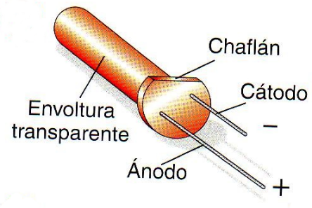

Es fundamental colocar correctamente un LED en el circuito para que funcione como queremos. ¿Cómo se hace esto sin equivocarnos? Es fácil, aunque se den varias circunstancias, como te comento a continuación:
- Si el LED es nuevo, verás que sus patillas son de distintos tamaños. La patilla larga es el ánodo. La corta, el cátodo. O será, larga = +; corta = -.
- Si hemos cortado las patillas al mismo tamaño, podrás fijarte que el LED tiene un chaflán (zona rebajada, que es plana). Ese chaflán indica el cátodo.
- Si hay varios chaflanes o el encapsulado está deteriorado, va siendo hora de buscar otro diodo. Aun así, todavía podrás identificar los terminales mirando el interior: el cátodo es el terminal plano.
- Si ya no puedes ver dentro siquiera, en serio, busca otro LED (¡no vale tanto!). Pero, si tienes un polímetro a mano, ponlo en modo de medición de continuidad y coloca las sondas en cada uno de las patillas. Si enciende, la que está junto a la sonda positiva es el ánodo y la otra el cátodo. Si no enciende, esto es al revés.
- Si nada de lo anterior funciona, ¡un LED nuevo cuesta 10 céntimos!